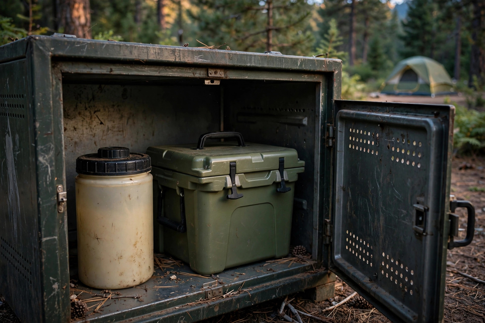

Bear-safe food storage: the attractant rules that actually matter

Most campers picture bear-safe storage as a food problem: lock up the cooler, hang the snack bag, done. Parks Canada guidance tells a wider story. The rule is about smells, not meals. Anything scented — food, garbage, toiletries, pet supplies, even the shirt worn while cooking — counts as an attractant, and attractants left out teach bears that campsites pay. A bear that learns that lesson is a danger to the next camper and, often, a dead bear. This guide puts the campground rules and the backcountry rules into one system: a full attractant inventory, a comparison of where everything can legally and safely go, the distances that separate cooking from sleeping, and a short nightly sweep that closes the site down properly.
The rule is about smells, not food
Start with the definition that matters. An attractant is anything with an odour a curious animal might investigate, whether or not a person would call it food. That is why official storage lists reach far beyond the cooler. Sunscreen, lip balm, toothpaste, shampoo, candles, citronella, and dish soap all appear on Parks Canada campground lists, alongside pet food and pet bowls, barbecues whether clean or dirty, and empty beverage containers. An empty cooler still smells like every meal it ever carried. The practical shift is simple: stop asking whether an item is food, and start asking whether it smells like anything at all. If it does, it belongs in secure storage whenever it is not actively in use — not on the picnic table, not in the tent, and not “just for a few minutes” while the site is unattended. Parks Canada warns that leaving scented items out even briefly can put visitors and wildlife at risk and can result in a fine.
The full attractant inventory
Use this inventory as the audit list for any site, frontcountry or backcountry. Food and drink, including sealed packages and empty containers. Garbage and food scraps, including strained dishwater solids. Coolers, full or empty. Pet food, pet bowls, and treats. Barbecues, stoves, and cookware that carry grease or food residue. Toiletries and scented products: toothpaste, soap, shampoo, sunscreen, lip balm, insect products, candles, and scented wipes. The clothing worn while cooking, which Parks Canada backcountry guidance treats as an attractant in its own right and stores with the food in airtight bags or containers. Anything on that list that is sitting out at bedtime is a storage failure, even if every actual food item is locked away. That breadth is the gap in most beginner advice, which tends to stop at food and garbage and miss the items campers handle without thinking.
Where it all goes: campground versus backcountry
The storage options differ by setting, and mixing them up is a common mistake. A tent is never storage, in either setting. The comparison below pulls the Parks Canada campground and backcountry guidance, plus a current United States forest order, into one place.
| Setting | Accepted storage | Not accepted |
|---|---|---|
| Developed campground | A hard-sided vehicle, trailer, or motor home, or the campground food-storage lockers, whenever items are not in use | A tent or tent-trailer, an open picnic table, a soft-sided vehicle top carrier |
| Backcountry with lockers | Bear-proof lockers provided on site, or portable bear-resistant containers such as certified canisters or barrels | Food left in packs on the ground, garbage buried at the site |
| Backcountry without lockers | A secure hang, or a certified bear-resistant container placed on the ground away from the sleeping area | A low or trunk-hugging hang, food stored in the tent for convenience |
| Canister-required areas | Only a certified hard-sided canister, or provided bear boxes where an order names them as an exception | Hangs and soft-sided scent-proof sacks, even products approved for other areas |
That last row is newer than many campers expect. In the Pemigewasset Wilderness in New Hampshire, a United States Forest Service order effective May 1, 2026 requires overnight campers to store food, containers, scented items, and refuse in a certified hard-sided canister, with provided bear boxes as the only exception, because other methods proved less effective there. Elsewhere in that same forest a proper hang remains an option, defined as at least twelve feet above the ground and at least six feet out from any object. The lesson is not the specific forest; it is that storage rules are local, tightening in places, and worth reading for the exact area before departure rather than assuming last decade’s hang is still legal.
Distances that do the quiet work
Where cooking and washing happen matters almost as much as where food sleeps. Parks Canada backcountry guidance for northern parks sets the pattern plainly: cook at least fifty metres downwind from the sleeping area, and never cook in or near the tent. Fifty metres is roughly half a football field — farther than most campers instinctively choose, and that distance is the point. Cooking odours concentrate where the stove ran, so the sleeping area should sit upwind and well away from that zone. Dishwater gets the same treatment: strain out food particles, pack those solids out with the garbage, and dispose of the water in a well-drained spot fifty metres from any freshwater source. And do not bury garbage as a shortcut. Bears can locate buried scraps and dig them up, which rewards digging at campsites and leaves the next party a pre-scented site. For a hang, the Parks Canada northern guidance is at least four metres off the ground and one metre from the trunk; other jurisdictions specify larger clearances, as the twelve-foot, six-foot example above shows. Use the local number when one is posted, and treat the larger figure as the safer default when it is not.
The nightly sweep, step by step
This is the tested procedure that turns the rules into a routine. Run it after dinner, before anyone settles in, and repeat the check any time the site will be left unattended.
- Cook and eat in the cooking zone only, at least fifty metres downwind of the tents, and keep every snack out of the sleeping area from the start.
- Strain the dishwater, bag the solids with the garbage, and scatter or drain the strained water in a well-drained spot fifty metres from freshwater.
- Change out of cooking clothes if they carry food smells, and bag those clothes with the food storage, in airtight bags or containers.
- Walk the inventory, item by item: food, garbage, cooler, pet supplies, barbecue and cookware, toiletries, candles, empty containers. Each one goes into the vehicle, locker, canister, or hang — nothing stays on the table.
- Scan the ground and the fire area for dropped scraps, wrappers, and grease drips, and pack out anything found.
- Do a final tent check: no food, no scented products, no cooking clothes inside, including lip balm and toothpaste in a jacket pocket.
What success looks like: a site a stranger could photograph and call bare — bare table, bare ground, tents holding only sleeping gear and unscented clothing, and every smell in camp sealed inside a vehicle, locker, canister, or a hang at the proper height and clearance. That is literally the standard behind Pukaskwa National Park’s BARE Campsite program, which requires attractants never be left unattended at participating campgrounds.
It is also the law, and it protects the bear
Storage rules are enforced, not suggested. Parks Canada notes that feeding, enticing, or disturbing wildlife in a national park is illegal, with fines up to $25,000 stated on its campground safety guidance, and unattended attractants can themselves draw a fine. Canister-required orders in the United States carry fines and possible permit revocation for non-compliance. Beyond penalties, the stakes run the other way: a food-conditioned bear that becomes bold around people is frequently destroyed. Clean storage is therefore not campsite housekeeping; it is the single habit that most directly decides whether the bears in a heavily used area stay wild and alive.
FAQ
Is a sealed, unopened food package safe in the tent? No. Sealed still smells, and the tent is never an accepted storage location in campground or backcountry guidance. Store it with the rest.
Does an empty cooler need to be stored? Yes. Empty coolers and empty beverage containers appear explicitly on official attractant lists, because residue and odour remain.
Is hanging food always enough? No. Some areas now require certified canisters and no longer accept hangs, and a hang only works at proper height and clearance. Check the rule for the exact area.
What about small animals? The same storage habits help: raccoons, squirrels, and mice are also drawn to scented items and scraps, and sealed hard storage defeats them more reliably than a bag.
Safety note: this guide is general information based on Parks Canada and United States Forest Service guidance checked in October 2026. Bear rules vary by park and can change with local bear activity. Always read the current rules for the exact campground or trail before a trip and follow staff instructions on site.